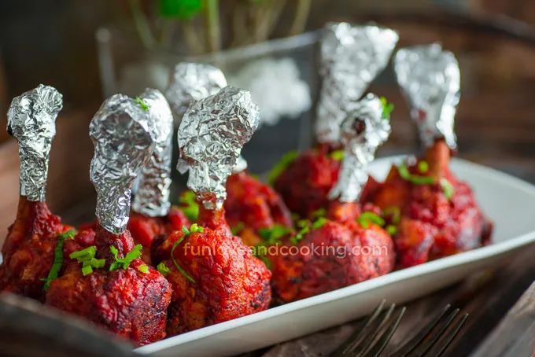
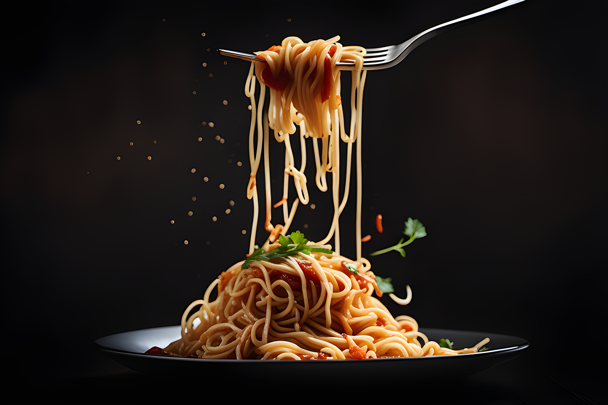
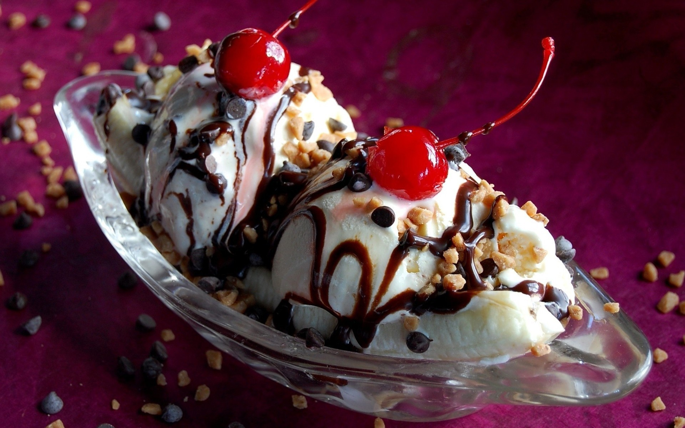

| Biryani | Starters | Icecreams&Cakes |
|---|
| ||
|---|---|---|
| Dum Biriyani -/200 | .jpg) |
.jpg) Biryani (/bɜːrˈjɑːni/) is a mixed rice dish, mainly popular in South Asia. It is made with rice, some type of meat (chicken, goat, pork, lamb, beef, prawn, or fish) and spices. To cater to vegetarians, in some cases, it is prepared by substituting vegetables or paneer for the meat.[1] Sometimes eggs and/or potatoes are also added.[2] Biryani is one of the most popular dishes in South Asia and among the South Asian diaspora, although the dish is often associated with the region's Muslim population in particular.[3] Similar dishes are also prepared in other parts of the world such as in Iraq, Myanmar, Thailand, and Malaysia.[4] Biryani is the single most-ordered dish on Indian online food ordering and delivery services, and has been labelled as the most popular dish overall in India. |
| Fish Biriyani -/250 | .jpg) | |
| Chicken Biriyani -/170 | .jpg) | |
| Lollipop Biriyani -/350 |  | |
| Mughlai Biriyani -/300 | .jpg) | |
| ||
|---|---|---|
| Chicken lollipop -/250 |  | .jpg) Starters consist of a wide variety of hot or cold dishes served before the main course of a meal. As part of a formal dinner, they may be preceded by soup and hors d’oeuvres. |
| Chicken 65 -/200 | .jpg) | |
| Panneer Majestics -/250 | .jpg) | |
| Noodles -/150 |  | |
| Chicken Burger -/100 | .jpg) | |
| ||
|---|---|---|
| Chocolate Icecream -/90 |  | IcecreamIce cream is a frozen dessert typically made from milk or cream that has been flavoured with a sweetener, either sugar or an alternative, and a spice, such as cocoa or vanilla, or with fruit, such as strawberries or peaches. Food colouring is sometimes added in addition to stabilizers. .jpg) CakeA cake is a type of (usually) sweet dessert which is baked. Originally, it was a bread-like food, but no longer. Cakes are often made to celebrate special occasions like birthdays or weddings. There are many kinds of cakes. |
| Strawberry Flavours -/120 | .jpg) | |
| Mixed Flavours -/150 | .jpg) | |
| Choclate Cake -/350 | .jpg) | |
| Strawberry cake -/300 | .jpg) | |
| Choclate Flavour -/70 | .jpg) | |